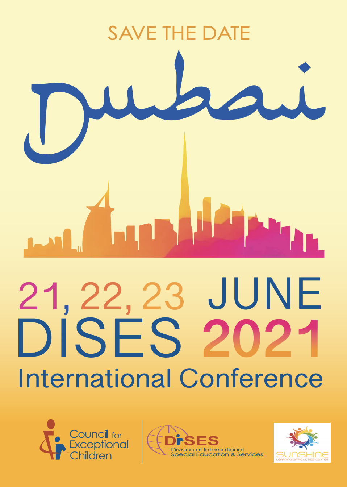

The Division of International Special Education and Services (DISES), a division of the Council for Exceptional Children, promotes knowledge exchange, collaboration, human rights and advocacy to those who provide services for individuals with disabilities. DISES promotes international communication, cooperation, and progress in education and services for children who have disabilities and/or gifts and talents. DISES serves as a catalyst for the international exchange of special education practice, promotes international research, and sponsors forums for professional development, and establishes networks that foster international association. You can visit the Council for Exceptional Children (CEC) website here.
The Division of International Special Education and Services (DISES), a division of the Council for Exceptional Children, promotes knowledge exchange, collaboration, human rights and advocacy to those who provide services for individuals with disabilities.
● Improve understanding of the conditions facing individuals with exceptional education needs and the professionals, parents, and others who provide education and services for them throughout the world.
● Serve as a catalyst for the international exchange of information on practice, research, technology and issues related to education and services for individuals with exceptional education needs.
● Promote international research and cross-cultural studies that advance education and services for individuals with exceptional education needs.
● Sponsor forums for professional development and discussion among those who are involved in providing education and services for individuals with exceptional needs.
● Engage in international projects and partnerships that join people from various societies and cultures in working toward common goals.
● Establish networks that foster collegiality and international association, recognize achievement and leadership, and foster broad understandings of the international experience in education and services for individuals with exceptional needs.
● Disseminate information in support of the Division’s purposes.
DISES President's Message - July 2020
Dear DISES Members and Guests:
It is my pleasure to begin my term as President of the Division of International Special Education and Services (DISES) for 2020-2021. I am very excited to welcome our newly elected Board of Directors (BOD) and look forward to a great year ahead. I am also incredibly grateful to have the opportunity to work with such a talented group of professionals who bring rich contributions to our work.
DISES is about collaboration, contributions, and community engagement through cultural and educational experiences. I invite you to become involved with our global community through participating in some meaningful way this year. Some suggested opportunities:
Our BOD is very involved in membership engagement and we invite you to join any one of our committees to get more involved in DISES. We currently have openings on our Membership and Communications committees. If interested, please let me know and I will connect you with the committee chairs to learn more about these opportunities.
Have you visited our website lately? Please do and view our Member Spotlight to learn more about the global community we represent and the interesting projects and contributions of some of our members. We also invite you to share your unique experiences and contributions to international special education so we can spotlight your work in a future article. Please contact me if interested and I will be happy to make the connection for you.
We also invite you to join us in Dubai for our Annual International Conference, June 21-23, 2021. We are excited about this event that promises to be an outstanding professional learning experience with presenters from several countries offering their perspective on inclusive education and other relevant topics. Most of all, the conference venue, program and collegial environment offer a great opportunity for international networking and collaboration with a wonderful group of professionals. It is an event not to be missed!
I look forward to hearing from you, connecting you to DISES leadership, a nd providing you with more information to engage you in these or any other opportunities you may be interested in thiis year.
All my best,
Mary V. Kealy, EdD
President, DISES
marykealy07@gmail.com
DISES President's Message - May 2020
Dear DISES Members and Friends:
It has been a privilege to serve as the President of DISES for the past year. As my term draws to an end in June, I want to thank each one of you for your support and my awesome colleagues on the DISES Board of Directors. I also want to highlight a few DISES achievements from the past year as well as welcome the new DISES board.
Selected accomplishments:
● DISES website was redone and the social media presence was increased to add Twitter, Instagram and the closed Facebook page only for members.
● Can you believe it? DISES completed 30 years.
● International Conference Dubai 2020 was postponed to next year due to Covid-19 which is unfortunate. However, we are pleased to announce that we have finalized the new dates in collaboration with our partners. So, please mark your calendars for the new dates - June 21-23, 2021! We look forward to seeing you there.
● DISES put out two surveys to help support DISES members and others. We are inviting you to help us and each other by completing one or both of the two surveys below by June 7th.
- The first survey, Graduate Student Research International Survey" is intended for instructors in colleges and universities supervising graduate student research. Please complete this survey and/or share with someone who can complete the survey.
- The second survey, Virtual Implementation of Services for Students with Disabilities in This Time of Covid Restrictions" is primarily intended for but not limited to those working with students with disabilities. Please feel free to share the survey with others.
New DISES Board of Directors (July 2020 - June 2021)
President - Dr. Mary Kealy
Past President - Dr. Jugnu Agrawal
Vice President - Dr. Clara Hauth
President-Elect - Dr. Nicole DeClouette
Treasurer - Dr. Ritu Chopra
Secretary - Elizabeth Colquitt, Ed.S.
Membership Officer - Dr.Jim Chapple
Communication Officer - Dr. Emily Collins
Member at large - Dr. Rebekka Jez
Member at Large - Dr. Robai Werunga
Member-at-Large (International Outreach) - Dr. Deborah Tamakloe
Member-at-Large - (Event Support) Mark Francis Ed.S.
Student Representative - Sacha Cartagena
Executive Director - Dr. Alice Farling
We would love to hear from you so please reach out to us via Email or Social media!
Best,
Dr. Jugnu Agrawal
President, DISES
HELPFUL RESOURCES
• Google and YouTube have launched new resource pages to help teachers and families continue to educate students while they're home from school due to the novel coronavirus. Click here for more info.
• Check out the lesson plans and activities for in home activities for parents by grade level at Discovery Education. Click here for more info.
• Indiana Department of Education Resources has a collection of several resources for teachers and parents to support different content areas including social-emotional learning. Click here for more info.
• UNESCO provides a list of educational applications and platforms to help parents, teachers, schools and school systems facilitate student learning and provide social caring and interaction during periods of school closure. Most of the solutions are free and several support multiple languages. Click here for more info.

Join DISES in Welcoming Six Newly Elected Board Members!
Their term begins July 1st, 2020.
1. President-Elect - Nicole DeClouette, Ph.D
2. Membership Officer - Jim Chapple, Ph.D
3. Member at Large - Event Support - Mark Francis, Ed.s
4. Member at Large - International Outreach - Deborah Tamakloe, Ph.D
5. Student Representative - Sacha Cartagena, M.Ed
6. Board Secretary - Elizabeth Colquitt, Ed.S
Please Participate in the DISES Survey!
DISES is interested in exploring information that may be of help to DISES members and others. We are inviting you to help us and each other by completing one or both of the two surveys below. Both surveys are designed to be easy to complete and will take minimal time. Thank you in advance!
The first survey is intended for instructors in colleges and universities supervising graduate student research. Please complete this survey and/or share with someone who can complete the survey. The second survey is primarily intended for but not limited to those working with students with disabilities. Please feel free to share the survey with others.
First survey link is here.
Second survey link is here.
Resources for Continuity of Learning
We know that these are challenging times so we wanted to share a list of some resources for Continuity of Learning during COVID-19. Click the links below for easy access.
Council for Exceptional Children
This site from Council for Exceptional Children offers a collection of resources to support special education professionals to apply good teaching practices remotely to provide services to students and families. They are updated regularly.
TTAC (right click on the link and open in new tab)
This comprehensive site managed by TTAC at George Mason University, VA includes a wide array of excellent resources for educators and families in several instructional, social-emotional and behavioral areas, in addition to disability specific resources , webinars, guidance documents and also includes links to many of the national centers, such as NCII and CEEDAR, etc. The website is ttaconline.org .
Educating All Learners During the COVID-19 Disaster (Educating All Learners Alliance (EALA)
Coronavirus is posing unprecedented challenges to public schools around the country. To help ensure the continuity of special education services during remote instruction and to spotlight best practice approaches for schools and educators, an alliance of national education organizations has come together to ensure equity for all learners. EducatingAllLearners.org creates a hub of curated tools, strategies, tips and best practices for supporting students with disabilities online. Our goal is to both curate and create special education resources for educators to serve students who learn differently during this time of challenge. This site includes a section on Events and Webinars and a Resource Library (Resources and Guidance, Technology Tools and Access, and Voices from the Field).
VA Learns Anywhere
The focus on a number of critical elements relevant to academic success, including equity, deeper learning, and the social emotional health of our students. Members on this Task Force, including teachers, instructional leaders, and content knowledge experts, came together to craft comprehensive guidance that will ensure learning continues for all students, while also ensuring students are served equitably, regardless of income level, access to technology, English Learner status, or special needs. The guidance includes an emphasis on instructional models that could include blending of non-technology; face-to-face, small-group learning sessions; virtual platforms; and/or a combination of all of these models.
Special Education Instructional Services (SEIS) Resource Repository
The Virginia Department of Special Education and Student Services, Office of Instructional Services, offered a new resource that focuses in on instructional resources to benefit educators and instructional leaders in the field. These resources are focused on serving students with disabilities on a variety of topics and content areas and reflective of the current challenges of serving students with disabilities during extended school closures as a result of COVID-19.
Professional Development Guidance for Administrators
The Professional Development Guidance (PDF) document connects administrators to information about opportunities and resources that provide professional learning opportunities for public school educators to support Continuity for Learning for all students.
Overview:
This document provides key considerations to assist administrators, Central Office, and Principals as they establish professional development that will support quality instruction and prevent further expansion of learning gaps. Guidance for supporting the physical, social, and emotional needs of students, families, staff, and the community is included and should inform those professional development decisions. Creating an environment to ensure safety, belonging, and mental health as a foundation for learning is imperative. Adequate support to ensure student success should include training for school staff on culturally responsive student and family outreach strategies. It is meant to help us focus our PD efforts when creating professional learning opportunities for staff.
Dubai 2020 International Conference Postponed Until June 21st-23rd, 2021
Given the ongoing situation with COVID-19 and the uncertainty that surrounds it, Dubai 2020 has been postponed to June 21st - 23rd, 2021. Our concern is the safety of our participants from around the world.
As a valued presenter, we encourage you to consider applying your current registration for Dubai 2020 to Dubai 2021. Please be sure to check with your co-presenters, if any, as you make your decisions. To be sure that everyone is informed, we would appreciate your forwarding this message to any co-presenters.
Unless you notify us that you must cancel your registration, your current registration payment will automatically be applied for June 2021 and your presentation will remain on the schedule for the program. If at a later date, you find that you do need to cancel, you will have through December 31, 2020 to do so and still receive a full refund. After December 2020, a cancellation fee will be charged per the previous cancellation policy.
If you find it necessary to cancel at this time, please contact the planning team at info@dises-cec.org to request a full refund. Refunds will be credited via PayPal using the same email address that was used to make the original payment. Refunds will be issued within 15 days of your request.
Questions? Please contact us at info@dises-cec.org. We hope to see you in Dubai on June 21st-23rd, 2021.
See past president's messages here!